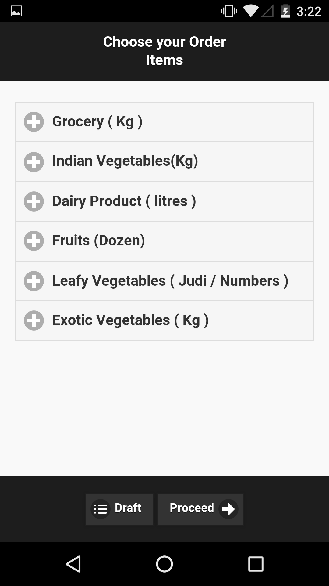
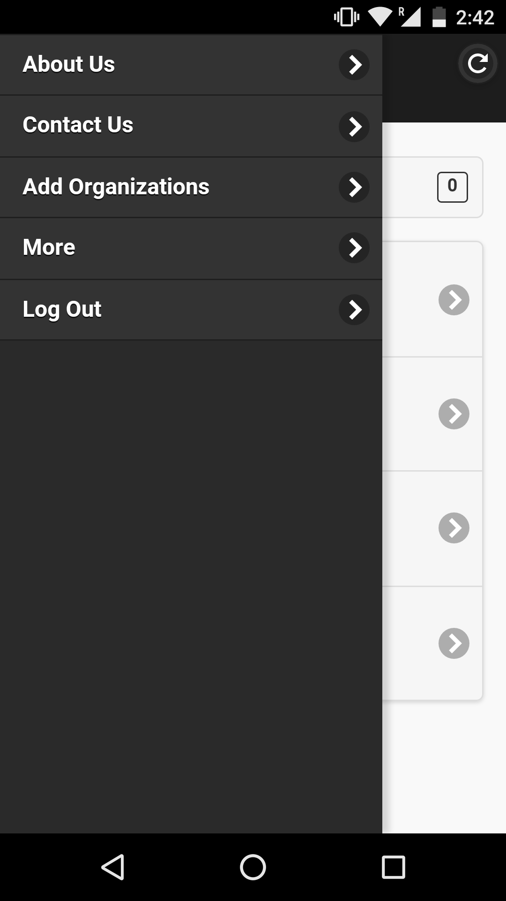

Using the Cart app
Using the Cart app
This app has been developed to help you get the ingredients for your food at your doorstep. You can order from the local farmer groups of your choice.
This document contains information on how to use the app. You can refer to it whenever you need help.
- Register
- Sign In
- The Dashboard
- Placing an order
- Looking at your previous orders
- Cancelling an order
- Saving your orders in Drafts
- STEP 1: Click the "Sign Up" button.
- STEP 2: Enter the details and click "Get OTP" to get the OTP on your e-mail address.
- STEP 3: Enter the the OTP received via your e-mail.
- STEP 4: Click "Confirm" and you will be taken to the Sign Up page.
- STEP 5: Fill in the form and click "Submit".
- STEP 6: You can now log into the app once the Admin approves your request.
- STEP 1: Choose the organisation and group from which you want to order. (as mentioned here)
- STEP 2: Click on the "New Order" button in the Dashboard.
This takes you to the New Order Interface.
 - STEP 3: Click on the classified produce to place an order.
- STEP 4: Enter the quantity of each item that you want to order.
- STEP 5: Click on the "Proceed" button.
- STEP 6: Here you are shown your full order and the amount to be paid.
Click on "Check Out" to order your list of items. - STEP 7: You will get a confirmation page. Click on "Done"
- The call flow of the system
- To get the Calling feature, select the organisation and the call button will be displayed.
- Click on the Call Button at the bottom of the screen to contact the concerned organisation.
- STEP 1: Find the Order ID of the order you want to cancel.
- STEP 2: Clicking on that ID shows the items in the order.
- STEP 3: Click the "Cancel Order" to confirm your action.
- STEP 1: Click on the "New Order" button and choose the items and their quantities you want to save.
- STEP 2: Click on "Draft" button and a you get the list of items you are saving.
- STEP 3: Click on "Done" to get your Drafts saved, else click "Modify" to redraft it.
- STEP 1: Click on the "Draft Order" button on the Dashboard. The interface that opens shows your saved drafts.
- STEP 2: Choose the orders you want to order/delete by checking the boxes.
- STEP 3: Click on "Order" to get your order placed.
- You can also click on the order to view it's details.
REGISTERThis is the main page of the app.
SIGN IN
Enter the number and the password registered with the organisation at the time of becoming a member.
Press the "Login" button.
In case you can't access your account, you can change your password by clicking on "Can't access your account?" button and following the steps.
THE DASHBOARD
This is the home interface of the app.
1. To start placing an order you have to click on the "+" sign on the top left corner, which will help you get added to a Organisation's list.
Via checkboxes send in your requests to various organisations. You can send a request only once, hence that organisation will not be displayed in the list subsequently.
2. The refresh button provided on the top right corner has to be clicked to get updated with the status of the organisation.
If the organisation has accepted your request the available produce from that organisation will be displayed.
The Spinner provided helps you choose the NGO through which you want to do the transaction.
Choose the appropriate quantities here before proceeding to order.
The title bar contains the "Help" menu button where you can get information regarding us.
It also has the help document which you can refer to when in doubt.


LOOKING AT THE PREVIOUS ORDERS
Clicking on the "Previous Orders" button helps you look at the orders that have been processed by the organisation, and have reached or are about to reach you.

On clicking each of the orders, you get a detailed view of the order.
Here you can click on "Modify" button to modify that order and place it, the same way we did before.
CANCELLING AN ORDER
Those orders that have not been processed by the NGO can be cancelled before the organisation processes it.
SAVING A DRAFT
You might want to save the items you would like to order later as drafts.
Saving a draft
Ordering or Deleting a draft
Click on "Delete" to delete the draft orders selected.